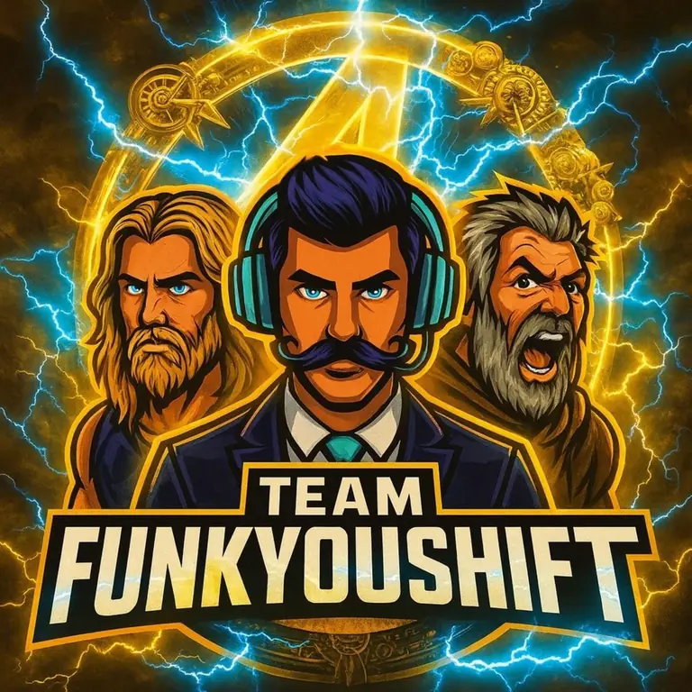

Start here if you searched “Borderlands Discord.”
Most people are looking for one of three things: trading, modded weapons, or someone who can answer a question without making it weird. That is exactly why the server exists.
Join the Discord
What happens in the server?
Why join this one?
Because it is not just a dead invite link sitting on a page. The community is built around actual players, trading help, giveaways, content, and people who are used to answering Borderlands questions.
Quick answers
Is this a Borderlands Discord server?
Yes. FunkYouSHiFT is a Borderlands community with Discord channels for trading, modded gear, help, giveaways, and general Borderlands chaos.
Can I get help with Borderlands 3 and Borderlands 4?
Yes. The community is built around Borderlands players, including BL3 and BL4 traffic as the games and discussions evolve.
Where do I ask for modded weapons or trading help?
Join the Discord first, read the channel rules, then ask in the correct trading or modded gear area so people can help faster.
More Borderlands help
Modding, modded weapons, builds, and Discord help are connected so Google and real people can find the right page fast.